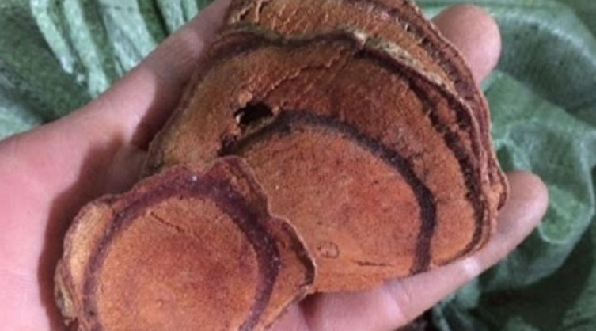
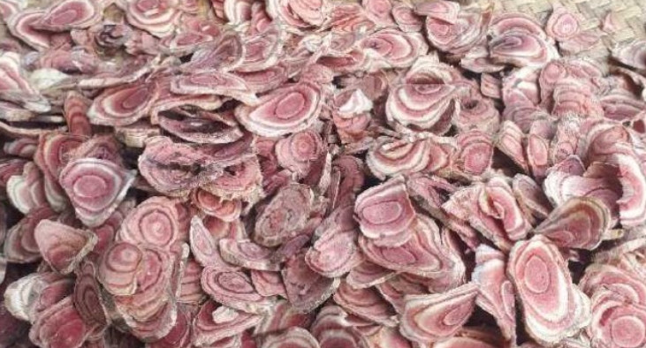
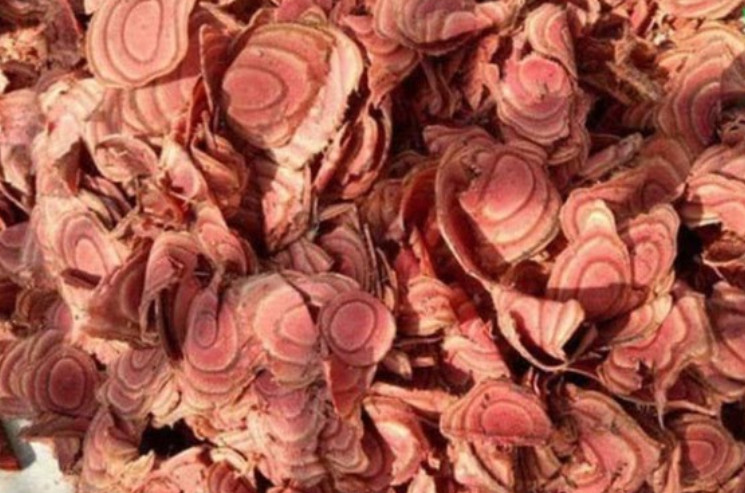
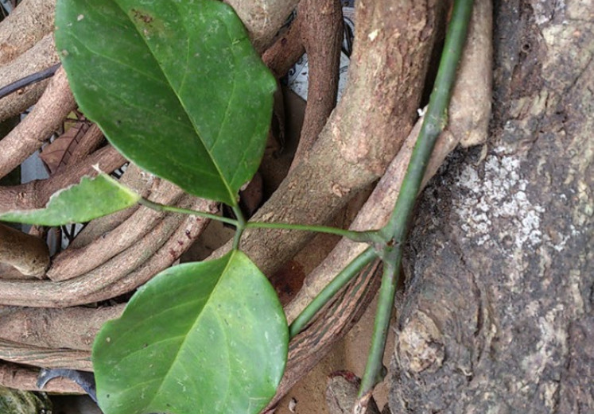
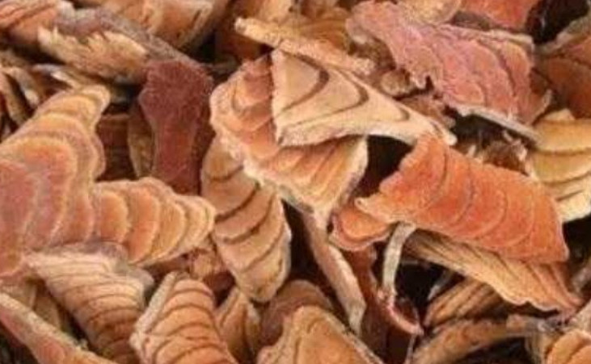

Cây kê huyết đằng và bài thuốc trị bệnh hiệu quả¶
Hỏi:¶
Mình muốn mua mấy kg kê huyết đằng về sử dụng mà lên mạng xem nhiều trang giá lệch nhau quá nhiều! Cảm ơn
Trả lời:¶
Theo các chuyên viên cho biết Kê huyết đằng có tên khoa học Millettia reticulata là thảo dược thuộc họ Đậu/ Cánh bướm. Dược liệu này có tác dụng chỉ thống, thông kinh lạc, bổ huyết, hòa huyết, mạnh gân xương buộc phải được dùng để chữa trị đau nhức xương khớp, thiếu máu cũng như kinh nguyệt không đều.
Tên gọi khác: Hoạt huyết đằng, hồng đằng,mã nhung đằng, trư huyết đằng, huyết phong, rất chương long, huyết long đằng, cửu tằng phong, hồng đằng, đại huyết đằng,…
Tên khoa học: Millettia reticulata
Họ: Cánh bướm/ Đậu (danh pháp khoa học: Fabaceae)
Cây huyết đằng là gì?¶
Cây huyết đằng hay còn được gọi là cây huyết rồng, cây thuyết đằng, đại hoạt đằng, hoạt huyết đằng, kê huyết đằng, đại huyết đằng, dây máu người…
Tên khoa học cây huyết đằng là Sargentodoxa cuneata (Oliv.) Rehd. Et Wiis
Cây huyết đằng có họ khoa học là Sargeniodoxceae.
Cây huyết đằng được mô tả như thế nào?¶
Cây huyết đằng là một loại dây leo, thân có thể dài tới 10m, vỏ bên ngoài màu hơi nâu. Lá mọc so le nhau, lá kép, gồm có 3 lá chét, cuống lá dài từ 4,5-10cm, lá chét ở giữa có cuống ngắn, lá chét hai bên gần như không cuống. Phiến lá chét ở giữa hình trứng, lá chét 2 bên hơi hình thận, dài từ 7cm tới 11cm, rộng từ 3,5cm đến 6,5cm.
Mặt trên của lá có màu xanh, mặt dưới của lá có màu xanh nhạt. Là loại cây có hoa đơn tính, khác gốc, mọc thành chùm ở một số kẽ lá, cụm hoa dài đến 14cm, mọc thõng xuống. Hoa đực có màu vàng xanh, có 6 lá đài, có 6 cánh tràng thoái hóa thành hình sợi cũng như 6 nhị. Hoa cái gần giống như hoa đực, rất nhiều lá noãn cũng như bầu thượng.
Quả mọng hình trứng dài khoảng 8-10mm. Khi chín có quả có màu lam đen. Thường ra hoa vào các tháng 3-4 và thường đậu quả vào những tháng 7-8.
Cây huyết đằng phân bố ở đâu?¶
Huyết đằng là dòng cây mọc hoang ở Lào Cai, Bắc Thái, Hoà Bình, Lạng Sơn,… Mọc ở trong các quần hệ rừng kín thường xanh trên núi đất, núi đá vôi; thỉnh thoảng chúng ta hay thấy ở kiểu rừng thưa nửa rụng lá hơi khô.
Cây huyết đằng có khả năng sống được trên rất nhiều dòng đất như feralit đỏ hoặc vàng trên núi, granit, bazan, đất pha cát dọc theo những bờ sông suối. Cây huyết đằng thường phân bố ở độ cao không vượt rất 1600m.
Thành phần hóa học của cây huyết đằng¶
Cây dây máu có chứa khá nhiều thành phần hóa học, bao gồm:
Milletol
Tanin
Chất nhựa
Glucozit
Beta Sitosterol
4-tetrahydroxy chalcone
Protocatechuic acid
5 Alpha-Stigmastane-3 Beta
Epicatechin
Daucosterol
Friedelan-3-Alpha-Ol
Licochalcone
9-Methoxycoumestrol
Bộ phận sử dụng của cây huyết đằng¶
Thân cây huyết đằng là thân gỗ leo nên thu hái được quanh năm. Chúng ta chặt về, tiểu phẫu cắt bỏ cành lá, để vài ngày cho nhựa se lại, sau đó mới chặt khúc cũng như phơi khô. Thân cây lúc tươi phẫu thuật cắt ngang có màu nhựa đỏ như màu máu người, khi khô ở mặt tiểu phẫu cắt có nhiều vòng đen do nhựa quánh lại.
Thu hái và chế biến cây huyết đằng Cây huyết đằng thu hái quanh năm, tốt nhất vào tháng 8 cũng như tháng 10. Chặt cây về, sau đó tiểu phẫu cắt bỏ cành lá và chọn thứ to, chắc, rồi phơi khô.
Tính vị, kinh quy của cây huyết đằng¶
Cây huyết đằng có vị đắng, ngọt và tính bình. Tác dụng lên 2 kinh Tâm, Tỳ.
Công dụng cây huyết đằng là gì?¶
Cây huyết đằng được dùng rất nhiều để bổ máu cũng như chữa trị cho khá nhiều căn bệnh không giống nhau. Cây này thường sử dụng cho các đối tượng như: người ốm yếu, suy nhược cơ thể, phụ nữ kinh nguyệt không đều; người già mắc phong thấp, đau nhức cũng như người khí huyết hư hàn.
Cây huyết đằng điều trị bệnh gì? Những bài thuốc từ cây huyết đằng¶
Cây huyết đằng có tác dụng chữa đau lưng, gối mỏi¶
dùng bài gồm có 16g cây huyết rồng; tục đoạn, xuyên khung, cẩu tích cũng như dây đau xương mỗi thứ dùng 12g. Sắc tất cả các vị thuốc trên rồi đem uống hàng ngày, mỗi ngày 1 thang, chia khiến cho 2 – 3 lần uống mỗi ngày. Sử dụng bài thuốc này liên tục khoảng 6 tháng sẽ thấy hiệu quả.
Cây huyết đằng có tác dụng giúp cơ thể suy yếu, đổ mồ hôi trộm¶
sử dụng bài gồm có 90g kê huyết đằng, đem rửa sạch, rồi sắc lấy nước. Cho vào trong hỗn hợp thuốc vừa sắc 1 – 2 quả trứng gà nấu như canh và kiên trì ăn liên tục từ 5 – 7 ngày để bồi bổ sức khỏe.
Cây huyết đằng có tác dụng chữa trị kinh nguyệt không đều¶
Bài thuốc bao gồm 16g cây huyết rồng, 10g ngưu tất, 6g nghệ vàng và 12g ích mẫu. Sắc uống tất cả các vị thuốc trên với nhau, mỗi ngày một thang. Dùng liên tục từ 5 ngày đến 10 ngày thì hiện tượng trên sẽ chấm dứt.
Cây huyết đằng có tác dụng chữa trị khí huyết hư, thiếu máu, người mệt mỏi, hoa mắt, chóng mặt¶
Bài thuốc bao gồm có 16g huyết rồng; đương quy, hà thủ ô, thục địa mỗi thứ 12g, 10g nhân sâm. Sắc uống mỗi ngày 1 thang, chia ra khiến cho hai lần, phải uống thuốc ngay lúc thuốc còn nóng. Sử dụng liên tục từ 3 – 5 ngày.
Cây huyết đằng có tác dụng chữa trị đau dạ dày¶
dùng bài gồm có Kê Huyết đằng từ 16 đến 20g. Sắc với nước, hoặc ngâm với rượu để uống, có khả năng sử dụng dây để nấu cao đều được.
Cây huyết đằng có tác dụng chữa trị đau lưng¶
Bài thuốc bao gồm kê huyết đằng, tỳ giải, rễ trinh nữ, ý dĩ mỗi thứ dùng 16g; cỏ xước 12g; quế chi rễ lá lốt, thiên niên kiện mỗi thứ 8g; trần bì 6g. Cho tất cả hỗn hợp trên với nhau rồi sắc uống.
9 Bài thuốc khác chữa bệnh từ dược liệu Kê huyết đằng¶
Kê huyết đằng được sử dụng để điều trị tê bại, chóng mặt, thiếu máu, rối loạn kinh nguyệt,…
Chuẩn bị: Cẩu tích, ngưu tất, tỳ giải cũng như cốt toái bổ mỗi thứ 20g, thiên niên kiện 6g, bạch chỉ 4g với huyết đằng 20 – 40g.
Thực hiện: Sắc uống ngày 1 thang.
Chuẩn bị: Huyền sâm 15g, huyết đằng 20g, mạch môn 15g và hạt muồng 15g, tâm sen 4g.
Thực hiện: Đem sắc uống.
Chuẩn bị: Rễ trinh nữ, ý dĩ, kê huyết đằng, tỳ giải mỗi thứ 16g, quế chi, thiên niên kiện và rễ lá lốt mỗi thứ 8g, cỏ xước 12g, trần bì 6g.
Thực hiện: Đem sắc uống.
Chuẩn bị: Ngũ gia bì hương, uy linh tiên, huyết đằng, độc hoạt và tang chi, mỗi thứ 12g.
Thực hiện: Đem sắc uống và sử dụng hết trong ngày.
Chuẩn bị: Kê huyết đằng 300g, 1 lít rượu.
Thực hiện: Đem kê huyết đằng tán nhỏ và ngâm với rượu trong khoảng 10 ngày. Mỗi lần sử dụng 25ml, ngày uống 2 lần.
Chuẩn bị: Hy thiêm, rễ vòi voi, kê huyết đằng và thổ phục linh mỗi thứ 16g, sinh địa 12g, rễ cà gai leo 10g, huyết dụ 10g, ngưu tất 12g, nam độc lực 10g, rễ cây cúc ảo 10g.
Thực hiện: Đem sắc uống ngày 1 thang.
Bài thuốc 1: Chuẩn mắc cây mua núi, huyết đằng và rễ gối hạc mỗi thứ 12g, dây đau xương, rễ phòng kỷ và vỏ thân ngũ gia bì mỗi thứ 10g. Đem những vị thái nhỏ và phơi khô, sau đấy đem ngâm rượu. Mỗi lần sử dụng 25ml, ngày sử dụng 2 lần.
Bài thuốc 2: dùng độc hoạt, thiên niên kiện, rễ bưởi bung, gai tầm xọng, xấu hổ, núc nác, huyết đằng, dây đau xương, phòng kỷ, chân chim, cô xước, quế chi mỗi thứ 4 – 6g. Đem những vị sắc lấy nước uống hay nấu thành cao.
Bài thuốc 1: sử dụng ngưu tất 12g, đào nhân 12g, nhọ nồi 10g, kê huyết đằng 20g, hồng hoa 12g, nghệ vàng 12g với cam thảo 4g. Đem những vị sắc với 400ml nước, còn lại khoảng 100ml. Chia thành 2 lần uống cũng như dùng hết trong ngày.
Bài thuốc 2: Chuẩn mắc dây đau xương, cẩu tích, huyết đằng và ngưu tất mỗi thứ 20g, ba kích 12g, cốt khỉ củ 8g, cốt toái bổ 12g với thiên niên kiện 8g. Đem sắc ngày dùng 1 thang.
Chuẩn mắc tô mộc 5g, kê huyết đằng 10g cũng như nghệ vàng 4g. Đem một số vị thái nhỏ, phơi/ sấy khô sau đấy sắc uống hết trong ngày. Nhưng phụ nữ đang có thai không được dùng bài thuốc này.
sử dụng ích loại 16g, nghệ 8g, đào nhân 8g, xuyên khung 8g, sinh địa 12g với huyết đằng 16g. Đem sắc lấy nước uống.
Lưu ý khi dùng bài thuốc từ Kê huyết đằng¶
các điều buộc phải chú ý khi dùng dược liệu huyết đằng:
dùng dược liệu này trong thời gian dài có khả năng gây táo bón và khô họng.
Phụ nữ có thai và cho con bú phải tham khảo ý kiến chuyên gia trước khi sử dụng.
Phía trên là những thông tin cần thiết về Kê huyết đằng mong rằng sẽ giúp cho bạn tìm được một loại dược liệu tốt cho sức khoẻ nhất .
Kê huyết đằng là một vị thuốc không thể thiếu trong các thang ngâm rượu¶
Thang ngâm rượu như: minh mạng thang, thang bổ thận 12 vị, than bổ thận 28 vị, kể cả trong thang amakong cũng không thể thiếu thảo dược này.
Bạn có nhu cầu mua minh mạng thang, thang bổ thận 12 vị, thang bổ thận 28 vị vui lòng liên hệ số điện thoại 0932.340.345
Video: Minh mạng thang 36 vị năm 2020¶
Tổng hợp các video về minh mạng thang¶
https://www.youtube.com/playlist?list=PLejr7_EdIH0ckym84da8girAdIaybLA6d
Note
Liên hệ Hà Toại - Điện thoại, hoặc Zalo số: 0964.421.551 hoặc 0932.340.345
Địa chỉ: Nhà 23a, Ngõ 137 đường Bát Khối, phường Long Biên, quận Long Biên, Hà Nội
Điện thoại: 0932 340 345